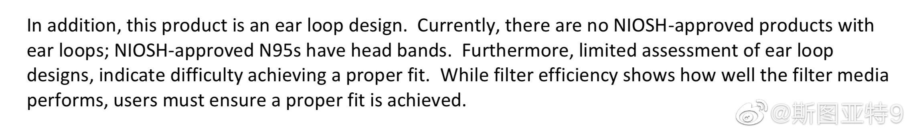

世界上疫情最严重的国家要驱逐一直呆在这个国家的外国留学生离境。这是一件多讽刺的事？

斯图亚特9
2020-07-08

斯图亚特9
2020-07-08
特朗普公开骂自己政府的CDC制定的秋季开学指导方针。副总统赶紧说他们过几天重新订一个。政治挂帅到这个程度，这个政府在抗疫方面的任何政策还值得相信吗？
斯图亚特9
2020-07-08
CDC这个文档这句话说NIOSH没有批准过任何耳挂式N95口罩。看来的确NIOSH总的来说对耳挂式口罩能达到的密封性能存疑。当然戴的紧不紧肯定主要看戴的人是不是认真而不是带子。不过耳挂式不能调节长度的口罩确实很难戴严。当然了，其实我们普通民众都不需要戴N95级别的口罩。也就是随便好奇八卦一下。
- 